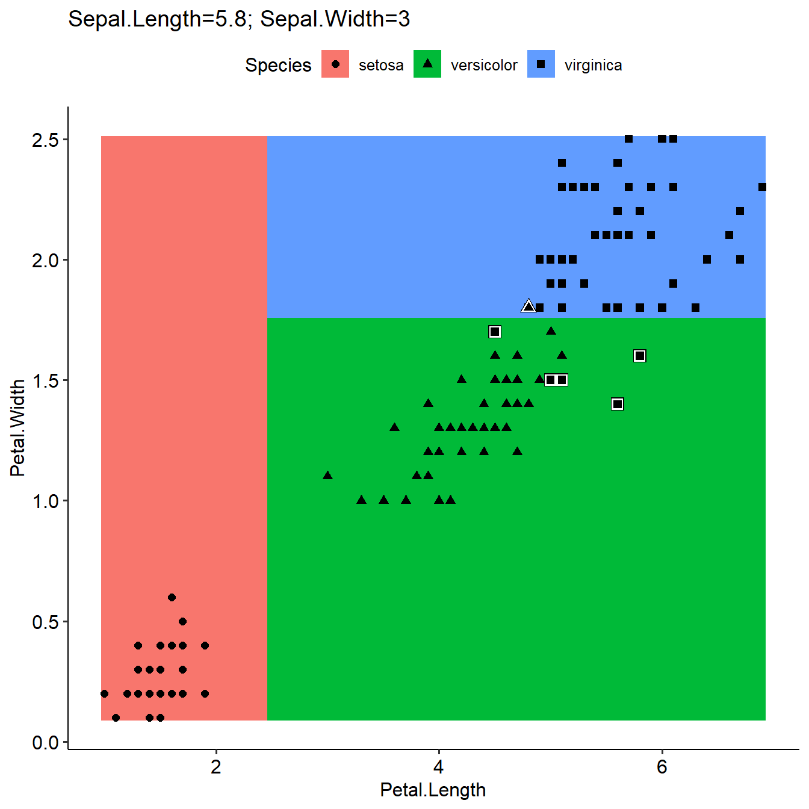
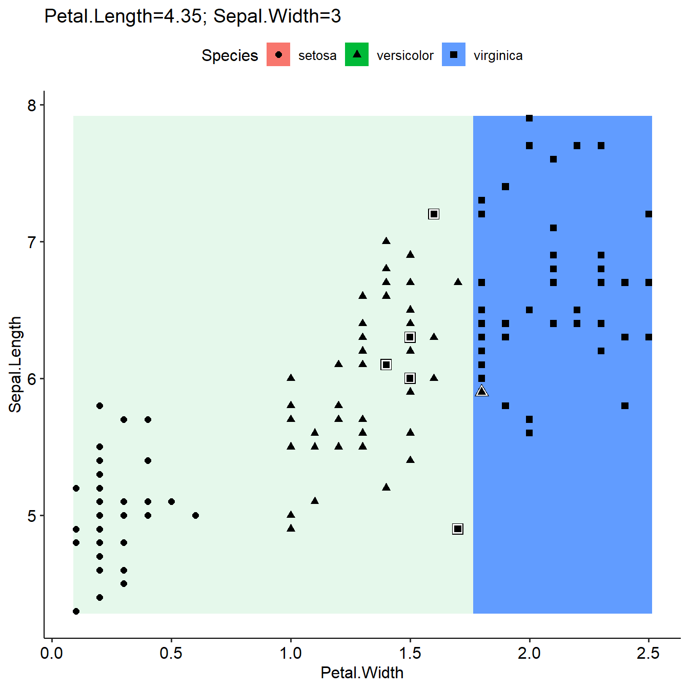

mlr3 vis development
Linlin Yin
2019-06-24
mlr3vis_dev.RmdTest for visulization functions from mlr to mlr3
#library(mlr3)
#library(ggplot2)
#library(data.table)
#library(dplyr)
#library(checkmate)
#devtools::load_all("d:/source/mlr3vis/")
library(mlr3)
library(mlr3vis)
#> Loading required package: ggplot2
#> Loading required package: ggpubr
#> Loading required package: magrittr
#> Warning: replacing previous import 'data.table::last' by 'dplyr::last' when
#> loading 'mlr3vis'
#> Warning: replacing previous import 'data.table::first' by 'dplyr::first'
#> when loading 'mlr3vis'
#> Warning: replacing previous import 'data.table::between' by
#> 'dplyr::between' when loading 'mlr3vis'
#> Warning: replacing previous import 'data.table::melt' by 'reshape2::melt'
#> when loading 'mlr3vis'
#> Warning: replacing previous import 'data.table::dcast' by 'reshape2::dcast'
#> when loading 'mlr3vis'
#> mlr3vis global settings: mlr_plot_theme=theme_pubrmlr: https://mlr.mlr-org.com/articles/tutorial/predict.html
mlr3: https://mlr3book.mlr-org.com/
plotLearnerPrediction
task = mlr_tasks$get("iris")
learner = mlr_learners$get("classif.rpart")
plotLearnerPrediction(learner=learner,task=task,prob.alpha = FALSE)
plotLearnerPrediction based on Experiment
task = mlr_tasks$get("iris")
learner = mlr_learners$get("classif.rpart")
e = Experiment$new(task = task, learner = learner)$train()$predict()
e$performance #NULL
#> NULL
e$score()$performance
#> classif.ce
#> 0.04
plotLearnerPredictionExperiment(e)
benchmark related
# get some example tasks
tasks = mlr_tasks$mget(c("pima", "sonar", "spam"))
# set measures for all tasks: accuracy (acc) and area under the curve (auc)
measures = mlr_measures$mget(c("classif.acc", "classif.auc"))
tasks = lapply(tasks, function(task) { task$measures = measures; task })
# get a featureless learner and a classification tree
learners = mlr_learners$mget(c("classif.featureless", "classif.rpart"))
# let the learners predict probabilities instead of class labels (required for AUC measure)
learners$classif.featureless$predict_type = "prob"
learners$classif.rpart$predict_type = "prob"
# compare via 10-fold cross validation
resamplings = mlr_resamplings$mget("cv")
# create a BenchmarkResult object
design = expand_grid(tasks, learners, resamplings)
print(design)
#> task learner resampling
#> 1: <TaskClassif> <LearnerClassifFeatureless> <ResamplingCV>
#> 2: <TaskClassif> <LearnerClassifRpart> <ResamplingCV>
#> 3: <TaskClassif> <LearnerClassifFeatureless> <ResamplingCV>
#> 4: <TaskClassif> <LearnerClassifRpart> <ResamplingCV>
#> 5: <TaskClassif> <LearnerClassifFeatureless> <ResamplingCV>
#> 6: <TaskClassif> <LearnerClassifRpart> <ResamplingCV>
bmr = benchmark(design)
#bmr
#bmr$aggregated(objects = FALSE)
#bmr$aggregated(objects = FALSE)[, list(acc = mean(classif.acc), auc = mean(classif.auc)), by = "learner_id"]plotBMRBoxplots
#Different facet and violin plot
plotBMRBoxplots(bmr,style = "violin",xVar="task_id",facet_x="measure",facet_y="learner_id")
generateThreshVsPerfData and plotThreshVsPerf
task = mlr_tasks$get("sonar")
task$measures
#> [[1]]
#> <MeasureClassifCE:classif.ce>
#> Packages: Metrics
#> Range: [0, 1]
#> Minimize: TRUE
#> Predict type: response
measures = mlr_measures$mget(c("classif.acc","classif.ce","classif.fpr","classif.tpr"))
task$measures = measures
learner = mlr_learners$get("classif.rpart",predict_type = "prob")
#learner$predict_type
#learner$predict_type = "prob"
e = Experiment$new(task = task, learner = learner)$train()$predict()
e$performance #NULL
#> NULL
e$score()$performance
#> classif.acc classif.ce classif.fpr classif.tpr
#> 0.8750000 0.1250000 0.1030928 0.8558559
performanceByThreshold=generateThreshVsPerfData(e)
plotThreshVsPerf(performanceByThreshold)